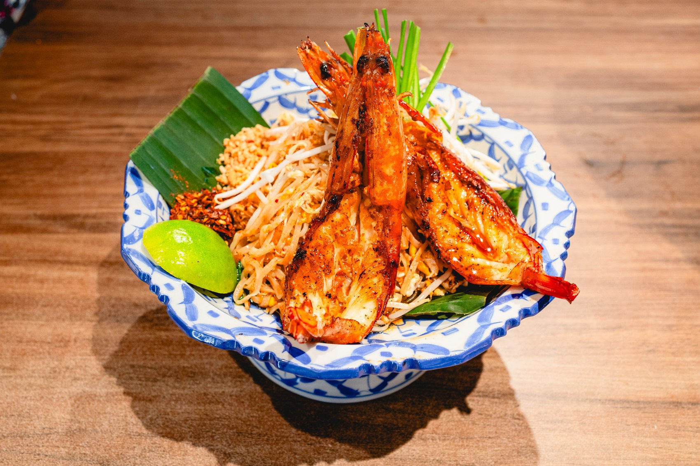
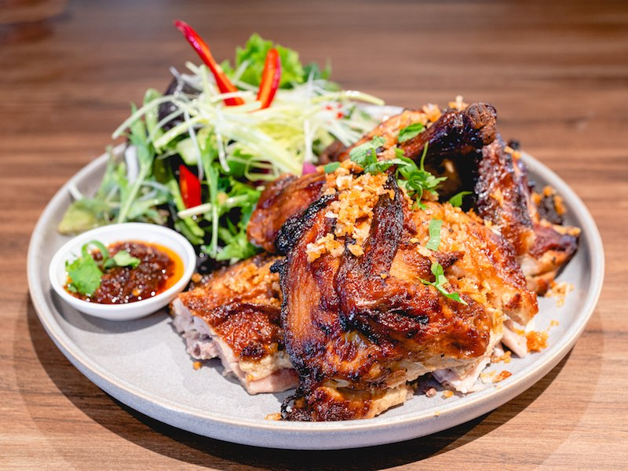
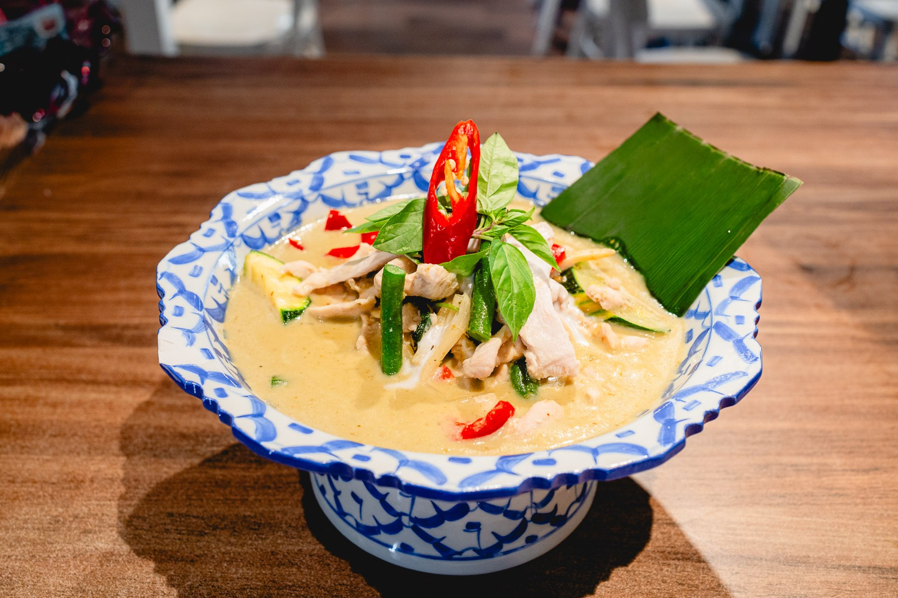
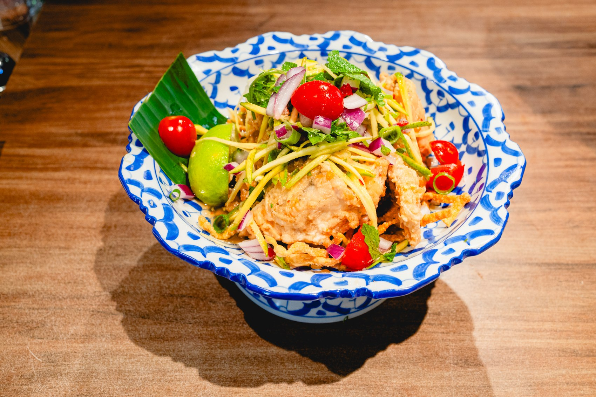

Work, with
better lunch.
Team lunches, office celebrations, meetings and corporate occasions. Start with the date and guest count; we’ll take it from there.
Plan a work event ↗MARKO’S CATERING · SYDNEY
Bring the flavours of Marko’s to your next occasion. Thai favourites, thoughtful menus, and a meal worth coming together for.
For the office, the celebration,
and everyone around your table.


A PLACE AT EVERY OCCASION
Tell us about your event. We’ll help shape a menu around the people, the occasion, and the way you’d like to eat.
Team lunches, office celebrations, meetings and corporate occasions. Start with the date and guest count; we’ll take it from there.
Plan a work event ↗Birthdays, family gatherings and those just-because moments. Thai flavours to make your celebration feel a little more special.
Plan a celebration ↗Community events, group catch-ups and shared occasions. Speak with us about a menu that suits your gathering.
Plan a group event ↗

FAMILIAR FLAVOURS. YOUR KIND OF MENU.
Take inspiration from our restaurant favourites: fragrant curries, vibrant salads, noodles and signature grilled dishes.
Let us know what your guests enjoy and any dietary requirements. We’ll confirm suitable dishes, serving arrangements and pricing with your quote.
Explore our restaurant menu ↗Restaurant dishes shown for inspiration. Catering selections are agreed with your enquiry.REAL MOMENTS AT MARKO’S
Explore dining spaces, meeting setups, celebrations and live events from different angles. Browse 18 photos of gatherings and spaces at Marko’s.
Let’s plan your gathering ↗FROM HELLO TO A HAPPY TABLE
Share your date, guest numbers, event location and the kind of meal you have in mind.
We’ll discuss dishes, dietary needs, timing and the practical details for your event.
Review your quote and confirm the arrangements with our team before your occasion.
A FEW GOOD QUESTIONS
We’ll prepare a quote around your guest count, menu and event requirements. Send your budget with your enquiry so we can discuss options.
Please share allergies and dietary requirements when you enquire. Our team will confirm which dishes and arrangements are suitable.
Include your event address and preferred arrangements in your enquiry. Availability, service options and any related charges will be confirmed in your quote.
Contact us as soon as you have a date in mind. Menu options and availability depend on your date and the details of your event.
LET’S MAKE IT HAPPEN
A few details are all we need to start the conversation. We’ll discuss your menu, timing and a quote for your occasion.